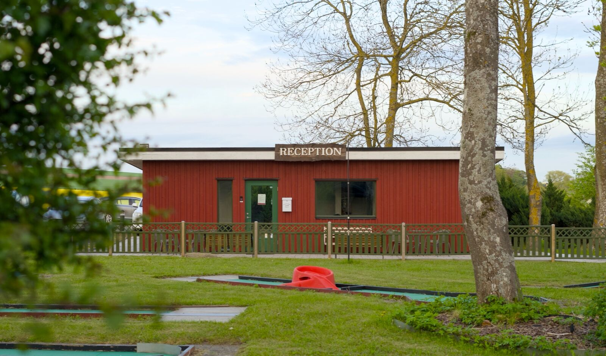

Gammeleksgården Minigolf
18 holes minigolf op het plattelandgratis voor onze gasten
Een rustige baan op het erf, een paar minuten van de E6. Speel een rondje met de kinderen voor het avondeten of in de avondzon.

Gratis voor onze gasten
Logeer je in het hotel of op de camperplaats, dan speel je zoveel je wilt, zonder kosten.
Clubs en ballen leen je bij de receptie of in de kist bij de baan.


Minigolf De minigolfbaan midden op het erf.
Sleep aan het beeld of gebruik de pijltjestoetsen. De pijlen in het beeld brengen je verder.
De baan
Bekijk de baan in 360°
De baan ligt midden op het erf, een paar stappen van de receptie en de parkeerplaats.